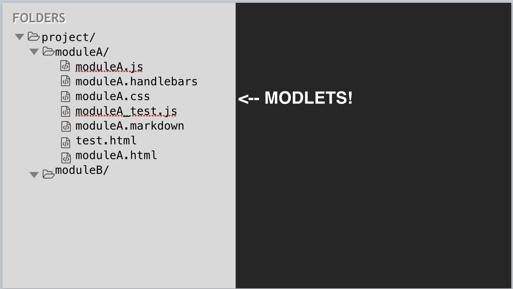

Your app. Done.
Your app. Done.


Create a new NPM package and install dependencies:
mkdir place-my-order
cd place-my-order
npm init
npm install steal can --saveCreate index.html:
<!DOCTYPE html>
<html>
<head>
<title>Place My Order</title>
</head>
<body>
<script src="node_modules/steal/steal.js"></script>
</body>
</html>Add app.js:
import $ from 'jquery';
import Map from 'can/map/';
import template from './index.stache!';
let state = new Map({
message: 'Hello world'
});
$('body').append(template(state));And the template in index.stache:
<h1>{{message}}</h1>A command line utility that is used to execute generators and other scripts installed locally in your project:
npm install donejs -gdonejs init [appname] initializes a new application in the current or appname folder.donejs generate runs generators from generator-donejsdonejs <script> runs scripts declared in your package.jsondonejs- prefixed binary (node_modules/.bin/donejs-<script>)Example: Development mode
donejs developA Yeoman generator for the application, components and models.
var generators = require('yeoman-generator');
var path = require('path');
module.exports = generators.Base.extend({
prompting() {
this.prompt({
name: 'name', type: String, required: true,
message: 'The name for you model (e.g. order)'
}, prompts => {
this.name = prompts.name;
done();
});
},
writing() {
this.fs.copyTpl(this.templatePath('mymodel.js'),
this.destinationPath(path.join('models', 'mymodel.js')),
{ data }
);
}
});package.json - main configurationtest.html - global test pagedocumentjs.json - Documentationsrc - development asset foldersrc/app.js - main application filesrc/index.stache - main templatesrc/models/ - models and fixturessrc/styles.less - main application LESSsrc/test/test.js - loads all tests that run in test.htmlsrc/test/smoke.js - functional application smoke test



A StealJS plugin that allows composing CanJS Components in a single file:
<can-component tag="hello-greeting">
<template>
<h1>Hello {{name}}!</h1>
</template>
<view-model>
import Map from "can/map/";
export default Map.extend({ name: "" });
</view-model>
</can-component>import { ViewModel, template } from "hello-world.component!";
const vm = new ViewModel();
console.log(template(vm));route.deparam('/home')
// -> { page: 'home' }
route.deparam('/restaurants/cheese-city/order')
// -> { page: 'restaurants', slug: 'cheese-city', action: 'order' }
state.attr({ page: 'order-history' })
// -> /order-history
state.attr({ page: 'restaurants', slug: 'cheese-city' })
// -> /restaurants/cheese-city
route.attr({
page: 'restaurants',
state: 'IL',
city: 'Chicago'
})
// -> /restaurants?state=IL&city=Chicago{{#helper1 (helper2 prop test) 'arg'}})switch statements
{{#switch page}}
{{#case 'home'}}
<pmo-home></pmo-home>
{{/case}}
{{#case 'restaurants'}}
<can-import from="pmo/restaurant/list/" can-tag="pmo-loading">
<pmo-restaurant-list></pmo-restaurant-list>
</can-import>
{{/case}}
{{/switch}}<parent-component>
<child-component parent="{.}"/>
</parent-component>events: {
inserted: function() {
var parent = this.element.parent().viewModel();
this.viewModel.attr('parent', parent);
}
}<app-editor toolbar="{toolbar}" rich-text="{rich-text}">
<app-toolbar #toolbar="{.}">
<app-rich-text #rich-text="{.}">
</app-editor>{
viewModel: {
refresh: function(){
this.attr("toolbar").refresh();
this.attr("richText").refresh()
}
}
}<app-editor #editor="{.}" />
<app-toolbar editor="{editor}" />viewModel: {
refresh: function() {
this.attr('editor').refresh();
}
}Access @root view model.
viewModel: {
refresh: function() {
this.attr('@root.error', 'This is a global error');
}
}Avoid if possible
<parent-component (saved)="{parentMethod}">
<child-component />
</parent-component>child-component:
viewModel: {
saveItem: function(item) {
can.dispatch.call(this, "saved", [item]);
}
},
events: {
"{viewModel} saved": function(viewModel, ev, item) {
this.element.trigger("saved", item);
}
}$.event.reverse('refresh');
viewModel: {
refresh: function(item) {
can.dispatch.call(this, "refresh", [item]);
}
},
events: {
"{viewModel} refresh": function(viewModel, ev, item) {
this.element.trigger("refresh", item);
}
}Model layer utilities for every JavaScript framework! Assemble real-time, high performance, restful data connections.
{
states: Promise<[State]>
state: String "IL”,
cities: Promise<[City]>,
city: String "Chicago”,
restaurants: Promise<[Restaurant]>
}fixtures.store creates a complete REST mock service:
import fixture from 'can-connect/fixture/';
const store = fixture.store([ data ]);
fixture({
'GET /orders': store.findAll,
'GET /orders/{id}': store.findOne,
'POST /orders': store.create,
'PUT /orders/{id}': store.update,
'DELETE /order/{id}': store.destroy
});
export default store;import QUnit from 'steal-qunit';
import cityStore from 'place-my-order/models/fixtures/city';
import stateStore from 'place-my-order/models/fixtures/state';
import restaurantStore from 'place-my-order/models/fixtures/restaurant';
import { ViewModel } from './list';
QUnit.module('place-my-order/restaurant/list', {
beforeEach() {
localStorage.clear();
}
});route(':page', { page: null });
route(':page/:slug', { slug: null });
route(':page/:slug/:action', { slug: null, action: null });{{#case "restaurants"}}
{{#if slug}}
{{#switch action}}
{{#case 'order'}}...{{/case}}
{{#default}}...{{/default}}
{{/switch}}
{{else}}
<pmo-restaurant-list></pmo-restaurant-list>
{{/if}}
{{/case}}<can-import from="bit-tabs"/>
<bit-tabs>
<bit-panel title="CanJS">
CanJS provides the MV*
</bit-panel>
<bit-panel title="StealJS">
StealJS provides the infrastructure.
</bit-panel>
</bit-tabs>